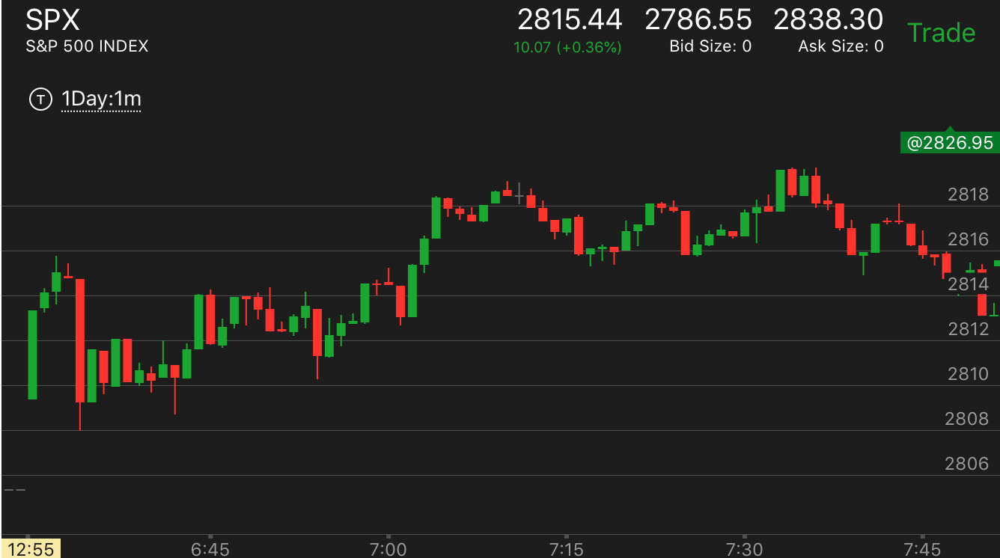
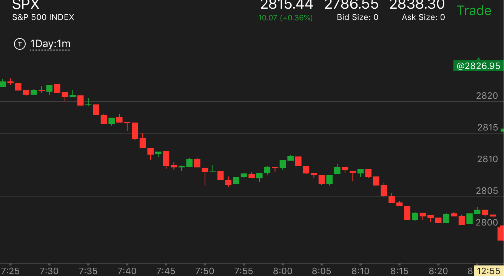

- 如果上涨前，出现了较大的下跌，反弹到了前面的某个低点，而且比前面的低点要低或者一样，而上涨的的速度比前面的上涨更快，那么
这个上涨一旦停止，走平，就会是顶部。这个其实就是相对论的幅度走势
- 但是如果上涨前，出现了较大的下跌，低点也和原来一样，但是上涨的速度很慢。远远低于前面到达高点的速度，那么这个上涨会继续上涨。会超过高点。
不会轻易停止。
- 如果快速下跌前，没有下跌，只是在某个点，突然冲高。那么要么它会填补真空，要么不填补真空，继续上涨，未来填补真空。
当然也有一种情况是在顶部加速。这个就不是相对论可以解释的。
- 这个走势要在更大的走势没有要求的条件下才可以。如果更大的走势没有结束，那么这个走势也不会起作用。

图示：
- 7：00的时候，没有很大的下跌，就大幅快速上涨，形成升势。这时可以判断。它没有特意走低，说明没有到达顶部，还会继续涨。
果然它在7：15回调，填补真空后，继续上涨。第一波上涨速度太快。被全部拉回。7：20再次上涨，速度变慢。这次走出了头部的样子。上涨结束
- 7：00的时候，没有很大的下跌，就大幅快速上涨，形成升势。这时可以判断。它没有特意走低，说明没有到达顶部，还会继续涨。
果然它在7：15回调，填补真空后，继续上涨。第一波上涨速度太快。被全部拉回。7：20再次上涨，速度变慢。这次走出了头部的样子。上涨结束

图示：
- 10：15大幅回调后，快速上涨。按说应该是这个走势。但是更大的走势要填补真空。真空的位置在2810.还没有填补。而且它没有走出顶部的样子。所以一定要
有顶部的样子才会反转。
- 10：15大幅回调后，快速上涨。按说应该是这个走势。但是更大的走势要填补真空。真空的位置在2810.还没有填补。而且它没有走出顶部的样子。所以一定要
有顶部的样子才会反转。

图示：
- 9：30出现了一个快速下跌后，大幅反弹。很快到了2760这个真空点。这个上涨速度比前面快很多。这样未来一定会低于这个点。
这时也恰好填补了空。所以会跌。
- 9：30出现了一个快速下跌后，大幅反弹。很快到了2760这个真空点。这个上涨速度比前面快很多。这样未来一定会低于这个点。
这时也恰好填补了空。所以会跌。
快速下跌后，是底部还是要继续跌
TOP
- 如果下跌前，出现了较大的反弹，反弹到了前面的某个高点，而且比前面的反弹点要高或者一样，而下跌的速度比前面的下跌更快，那么 这个下跌一旦停止，走平，就会是底部。这个其实就是相对论的幅度走势
- 但是如果下跌前，出现了较大的反弹，高点也和原来一样，但是下跌的速度很慢。远远低于前面到达低点的速度，那么这个下跌会继续下跌。会跌破低点。 不会轻易停止。
- 如果快速下跌前，没有冲高，只是在某个点，突然大跌。那么要么它会填补真空，要么不填补真空，继续下跌，未来填补真空。 当然也有一种情况是在底部加速。这个就不是相对论可以解释的。

图示：
- 开盘后，注意，它出现了lower low。6：50的反弹，幅度很大，和前面的高点平齐，而下跌速度很快。只用了4分钟，跌幅很大，
它在底部走平后，再次走低。形成了一个小型的底部加速，反弹，这样的走势一定会反弹。它反弹的幅度一定至少和前面下跌的开始点平齐。
如果是更大的走势没有反转，那么它会一样高，如果反转的更大的走势，那么会大幅超过。也和它涨的形状有关。
- 7：30开始再次下跌。这个可以把7：00开始的冲高当作前面的下跌。但是这个不一样。关键在于速度。6：50的下跌只有4分钟。
而7：30开始的下跌速度很慢，时间远远超过4分钟。这样的下跌就会持续下跌，不会见底。应该去做空，而不是做多捞底。这个和前面的走势不一样。
它后面也确实大跌。
- 开盘后，注意，它出现了lower low。6：50的反弹，幅度很大，和前面的高点平齐，而下跌速度很快。只用了4分钟，跌幅很大，
它在底部走平后，再次走低。形成了一个小型的底部加速，反弹，这样的走势一定会反弹。它反弹的幅度一定至少和前面下跌的开始点平齐。
如果是更大的走势没有反转，那么它会一样高，如果反转的更大的走势，那么会大幅超过。也和它涨的形状有关。
- 7：30开始再次下跌。这个可以把7：00开始的冲高当作前面的下跌。但是这个不一样。关键在于速度。6：50的下跌只有4分钟。
而7：30开始的下跌速度很慢，时间远远超过4分钟。这样的下跌就会持续下跌，不会见底。应该去做空，而不是做多捞底。这个和前面的走势不一样。
它后面也确实大跌。

图示：
- 7：20出现了很大的反弹，然后出现了速度很快的下跌。下跌时间和前面一样，都是4分钟，但是幅度大的多。它在底部加速后，反弹走平。这样的走势，
一定至少会反弹到前面的下跌高点，也就是2826.也可能超过它。
- 8：35也是一个冲高下跌，但是和8：16的下跌速度比较起来，它的速度非常的慢。8：16只有1分钟。而8：16用了7，8分钟。这样它下跌后不是底部，不会反弹，会继续下跌。
- 7：20出现了很大的反弹，然后出现了速度很快的下跌。下跌时间和前面一样，都是4分钟，但是幅度大的多。它在底部加速后，反弹走平。这样的走势，
一定至少会反弹到前面的下跌高点，也就是2826.也可能超过它。
- 8：35也是一个冲高下跌，但是和8：16的下跌速度比较起来，它的速度非常的慢。8：16只有1分钟。而8：16用了7，8分钟。这样它下跌后不是底部，不会反弹，会继续下跌。
